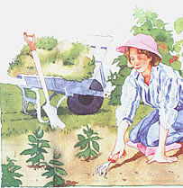

14 Ways To Extend Your Gardening Season
June/July 1994
By Gail Damerow
How to enjoy fruit and vegetables from winter to spring by planning a year-round garden.
Most gardeners I know plant in late spring and then sit back and watch their gardens grow. Our family, on the other hand, keeps planting and planting and planting. As a result, while others complain about the price of lettuce, we're enjoying virtually free salads. While others are using up the last of the season's green tomatoes, our family is still slicing into juicy, ripe, freshly picked tomatoes.
No, we aren't gardening geniuses. We just happen to prefer fresh vegetables, so we take advantage of every trick in the book to keep our veggies growing. Here are 14 ways you too can extend your gardening season.
1. Know your garden's microclimate.
Most climate maps cover areas that are too broad to be useful for any specific garden. The latest USDA map is better than the old one but still isn't truly accurate. The only way to know your garden's microclimate is to keep your own records over the years. But, since the weather is never the same two years in a row, even your own records will, at best, provide averages.
Not only does the weather change from year to year, but mini areas within your garden may differ significantly from one another. Is part of your garden shaded by trees or buildings? Is some area shielded from cold or drying wind by a fence or shrubs? Are there low spots where cold air and frost readily settle?
Select vegetables described as growing best in your general climate. If your garden has more than one microclimate, try different varieties in different spots. Some may do better than others in certain spots; some may do better one year than in the next.
2. Plant often.
Successive planting is the best way to stretch the harvest over a period of time. One successive planting method is to simultaneously sow seeds and set out started seedlings of the same variety. The transplants will be ready for harvest before the direct-seeded veggies are.
Another successive planting method is to replant at periodic intervals. Sow radishes and spinach once a week; sow beans, beets, carrots, scallions, and salad greens every two weeks; sow cucumbers and summer squash once a month. Since you can't tell in advance just how warm or cool the season will be, keep planting until seeds stop sprouting well.
A third method for ensuring a successive harvest is to sow seeds of several different varieties that mature at different rates. Planting rows of different varieties is an easy way to extend the harvest of corn and peas. For carrots, radishes, and salad greens, you have the option of mixing the seeds of different varieties together and planting them all in the same row.
In our garden we get the greatest variety of salad greens over the longest period of time by both mixing different kinds of lettuce seed together and planting the mix every two weeks. We do the same with radishes. When our weather suddenly turns hot (as it does every year), some varieties will run for cover, while others continue supplying us with fresh salads for a few weeks longer.
Continue successive planting as the weather warms, replacing spring crops with summer crops and summer crops with fall veggies. Besides extending the harvest, successive planting has an additional advantage - it keeps the soil productive and thereby discourages weeds.

3. Hit weeds early and hard.
Vegetables grow fastest and produce the greatest yields if they don't have to compete with weeds. Yet any time you work the soil, you encourage weeds to grow. As soon as you notice weeds sprouting along your newly planted rows, hoe them down. Repeat in two weeks, and again two weeks later. After that, you should have no more than the occasional weed, especially if you tuck veggies into a thick layer of mulch as they grow.
4. Use raised beds.
Raised beds can be temporary soil mounds with tamped-down paths between them or they can be permanent rectangular boxes made of timber, stone, blocks, or bricks. They can be only a few inches high, or high enough to let you comfortably sit on the edge while you sow and weed. They can be 4-foot squares or 4- by 20-foot rectangles.
Whatever their design, beds raise soil above the path, where it isn't walked on. Since it doesn't get compacted, it doesn't need frequent tilling. Turning the soil brings weed seeds to the surface where they more readily germinate. With less tilling, you get fewer weeds, and the ones that do pop up are easy to pull (because you don't have to stoop as far and because the soil remains loose). Since weeds are less likely to grow to maturity and make more weed seeds, using raised beds helps to break the perpetual weeding cycle that discourages all too many gardeners.
5. Trellis.
Trellising veggies whenever possible makes it easier to weed and mulch around the base of plants, as well as giving you more room to plant additional crops. Some vegetables you can successfully trellis are peas and beans (climbing, not bush, varieties), indeterminate tomato varieties, and vining types of cucumber, melon, winter squash, and zucchini. If large melons or squash get heavy and start pulling on the vine, fashion slings from stretchy material, such as worn-out nylon stockings.
6. lnterplant.
Interplanting, or combining compatible vegetables in the same row, has several advantages. It lets you extend the harvest by planting fast-growing veggies among slow growers. By the time the slow growers need more room, the fast growers are done and gone.
Another way interplanting extends the harvest is by letting you grow cool-season veggies into the warmer months. Shade created by big-leafed crops like cabbages, tall crops like corn, or trellised crops like beans can improve summer growing conditions for cool weather crops like radishes and lettuce.
Interplanting, like successive planting, maximizes yields by keeping your garden soil occupied so weeds can't find a foothold. It also discourages plant pests by varying the environment. As a bonus, in seasons when one crop doesn't do particularly well, the interplanted crop should still give you something to harvest.
7. Rotate.
Crop rotation means nothing more than not planting vegetables from the same family in the same place twice in a row. Since all plants within the same family experience the same problems, rotated crops suffer less from pests, diseases, and soil deficiencies. They therefore tend to produce over a longer period than plants grown in the same tired soil time after time.
Here, again, raised beds offer an advantage. You can set up a crop-rotation plan and use it year after year, simply by shifting your planting scheme from one bed to the next. Because legumes fix nitrogen in the soil, whenever possible alternate a legume veggie in one of the other families.
8. Water only when necessary.
Water your garden only as necessary to makeup the difference between rainfall and the amount of water your plants need. If your garden soil is rich in organic matter, as it should be, it will trap and hold most of the water that falls on it without need for much intervention. Mulching heavily around plants ensures that water won't evaporate too quickly, but will remain available to the root systems. Your plants will continue to grow, even during spells of moderately dry weather.
More gardeners tend to overwater than to underwater. Watering too much encourages roots to remain just below the soil's surface, instead of stretching downward. As a result, root systems have less access to nutrients in the soil that are needed for plants to grow and thrive. Roots also dry out more quickly and need to be watered more often.
Sometimes overwatering is not the gardener's fault, but nature's. Too much rain causes carrots, tomatoes, and cabbages to split, and can cause onions and potatoes to rot in the ground. Here, again, raised beds offer a distinct advantage - they let you easily cover water-sensitive crops when rainfall doesn't seem to let up.
To tell if your garden needs watering, pick up a bunch of soil in your hand and squeeze. If it doesn't hold together when you open your hand, get out the soaker hose. When you do irrigate, apply a generous amount of water to penetrate to the root zone. Check your work by using a hand trowel to make sure the water has soaked down 6 to 8 inches.
Always water early in the day, for two reasons: first, so plant leaves have a chance to dry out in the warmth of the sun, thereby discouraging bacterial and fungal diseases that can affect shaded plants; second, so the soil that's been cooled by water has a chance to warm up again before the next moisture arrives.
Don't Overdo It!
More gardeners tend to overwater than underwater.
9. Watch for early frost.
In years when early sporadic frost strikes, sometimes all your garden needs to keep growing well into fall is a night or two of vigilant frost protection. Although they're expensive, floating row covers (such as Remay) are ideal because they let in light and air during the day. Plastic sheeting will work, as will old bed sheets, provided you remove them during sunny days so they don't trap in too-hot air. You'll also have to prop them away from plants, since plastic collects puddles and wet sheets get heavy and can break off plant stems.
One way to keep plastic or bed sheets above plants is to drape them over a portable tunnel frame fashioned from PVC pipe. The frame can do double duty in the warmest weather-covered with shade cloth instead of sheeting, it can be used to protect tender salad greens from the summer's hot sun.
10. Build a cold frame.
If you are concerned with sensitive crops as fall weather begins, building a cold frame is an excellent idea. A cold frame is nothing more than a shallow rectangular box with no bottom and with a cover of glass, plastic, or fiberglass. The sides can be wood or straw bales, and should slope toward the south to capture the sun's warming rays. Fill the cold frame with good garden loam (see "The Dirt on Dirt," issue #136).
Since plants go dormant at low temperatures, get your cold frame up and running well into summer so your cool-season veggies will be ready for picking in winter and early spring. Then, either let them go dormant or keep new ones growing by turning your cold frame into a hot bed with soil heating tape. First lay down a sheet of Styrofoam insulation, cover it with a layer of sand, add a layer of soil, lay down the heat tape (as directed on the label), add another layer of sand, and cover it with 6 to 8 inches of loam. Connect the heating tape to a switched outlet, and your cold frame will become a hot bed at the mere flip of a switch.
Next spring, use your cold frame to get a jump on the planting season. When you're ready to transplant seedlings to the garden, leave a few behind in the cold frame to mature earlier than the transplanted veggies; after the danger of frost has past, remove the cover and let the cold frame function as a raised bed.
11. Start seeds indoors.
Even if you don't have a cold frame, you can get a three-month jump on next year's planting season by starting seeds indoors. We find that seedlings we start ourselves take off like a shot when they're transplanted, compared to store-bought seedlings that fritter away, sometimes growing slowly and bearing poor fruit, and sometimes just up and dying (see "Starting Seeds Indoors," issue #136). You'll be ready for spring planting, while at the same time doing your bit for recycling, if you start saving empty yogurt containers, plastic cups, and the like to hold your seedlings.
Window-sill seedlings grow spindly and otherwise don't do nearly as well as seedlings started under a light. A whitelight fluorescent tube will cost you much less than a nursery grow-light, and you can save even more by watching for sales on tubes and fixtures during bargain seasons of summer and fall.
Set up your nursery about three months before the last expected frost-free date in your area. Continue starting seeds of different kinds (see "Starting Seeds Indoors." chart on page 60) until about a month before the expected last frost in your area. Transplant seedlings into slightly larger pots when they reach 3 to 4 inches, and again when they reach 6 to 8 inches. By the time your garden soil warms up enough for transplanting, you'll have sturdy plants with strong roots.
Start Your Own Seeds
Our home-started seedlings flourish while the store bought seedlings fritter away
12. Plant early.
Be prepared to plant in spring as early as soil dampness and warmth allow. Because raised beds hold garden loam above normal soil level, they let the loam warm and drain faster than the surrounding soil. You can therefore work in a raised bed several weeks before soil conditions would otherwise allow you to get out into the garden. If you don't already use raised beds, map out an area for one or more and set them up as soon as this year's crops are harvested.
Whether or not you opt for raised beds, ensure the success of early plantings by using a soil thermometer to monitor soil temperature. Some seed packets and mailorder catalogs offer information on the best soil temperatures for germinating the particular varieties you select, so a small investment in a thermometer now can pay off in healthy plants at harvest time.
13. Protect plants from late frost.
Be prepared to protect next spring's early plantings if a late frost threatens. Start now by stocking up on grocery bags, One-gallon plastic bleach jugs, milk cartons, and so forth. Upside-down paper bags, anchored, work well for individual seedlings, but must be removed during the day. One-gallon plastic bleach or milk jugs, with the bottoms cut off, are a popular choice because they're cheap and they have caps that can be unscrewed during the day to release excess heat.
14. Plan ahead.

You can't get a jump start on the season if you don't have the seeds you need when time comes to plant them. Since our local stores don't display seeds until weeks after we think seeds ought to be started, we do a lot of our garden shopping by mail (see "Mail-Order Mania," issue #129).
Buying by mail, however, can be more expensive than purchasing locally. One way to save money and have the seeds you want when you want them is to grow open-pollinated (nonhybrid) varieties this year and save their seeds for next year. Although you'll have to observe certain precautions - like planting open-pollinated varieties of like kind far enough apart to avoid crosspollination - you'll enjoy other advantages besides saving money.
For one thing, plants successfully grown in your garden from year to year will become acclimated to your particular area, and will therefore do better than seeds originating elsewhere. For another thing, the plants will always grow true to form, so you shouldn't have any surprises. Nothing can throw a garden plan farther off than purchasing seeds of a favorite variety, only to find that it's been "improved" and no longer behaves the same as it once did.
If harvesting your own seed seems like too much bother, you can still save money and have seeds when you need them by watching for local sales in midsummer and purchasing enough seeds to carry you into the next season.
Whether you buy seeds or harvest your own, make sure they maintain a high germination rate by storing them in a cool, dry place out of sunlight. An ammunition box - available at any military surplus outlet - makes an ideal seed storage container. So does an insulated picnic cooler (without the ice pack, of course). Add a packet of powdered milk, silica gel, or other drying crystals to keep humidity from rising above the ideal 6 percent minimum.
If you plan ahead, plant early, and keep on planting, you too can enjoy eating tons of fresh-picked veggies while everyone else grumbles about the high price of produce.
Illustrations by Joel Popadics
Resources:
The New Organic Grower's Four-Season Harvest by Eliot Coleman showes you, as the subtitle suggests, "how to harvest fresh, organic vegetables from your home garden all year long" - $17.95 from Chelsea Green Publishing Co., PO Box 130, Post Mills, VT 05058-0130, 802-333-9073.
Cold-Climate Gardening by Lewis Hill is a 320-page paperback on "how to extend your growing season by at least 30 days" - $12.95 from Storey Communications, Schoolhouse Road, Pownal, VT 05361, 800-441-5700.
 Since the soil in raised beds is above the garden path, it compacts less and needs less tilling. . . and weeding. |
 Not only is a cold frame excellent protection against frost, but it also doubles as raised bed in the warmer months. |
|
|
|
|
|
|
|
|
|